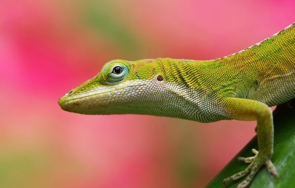

| Довідник по догляд за ящіркою Ця сторінка має допогти вам у догляді за вашою ящіркою у дома. Тут зможете дізнатися чим годувати вашого улюбленця та які умови для життя йому потрібні. Перейдіть на розділ "Стаття" там буде вся корисна інформація та примітки. |
 |